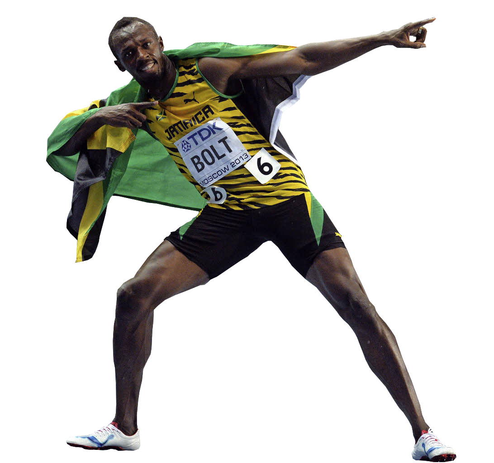
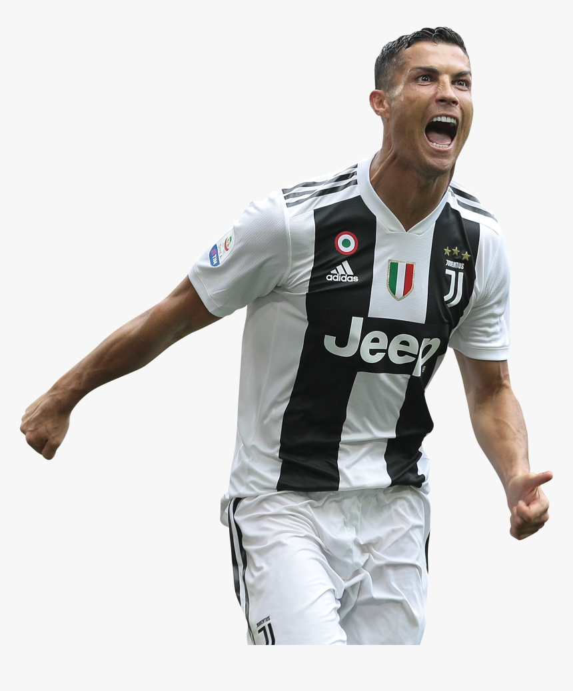
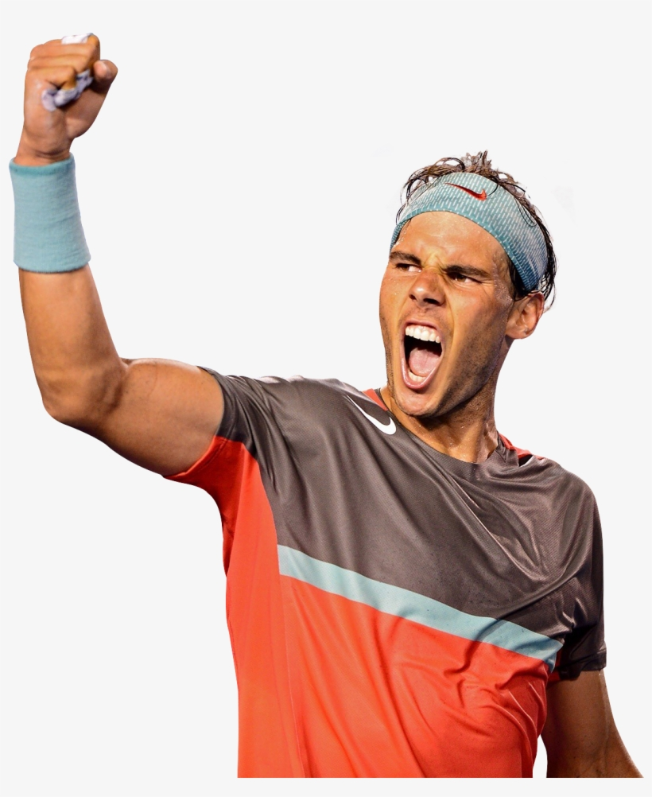
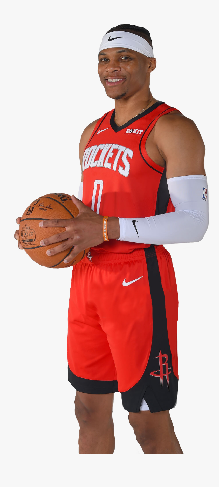
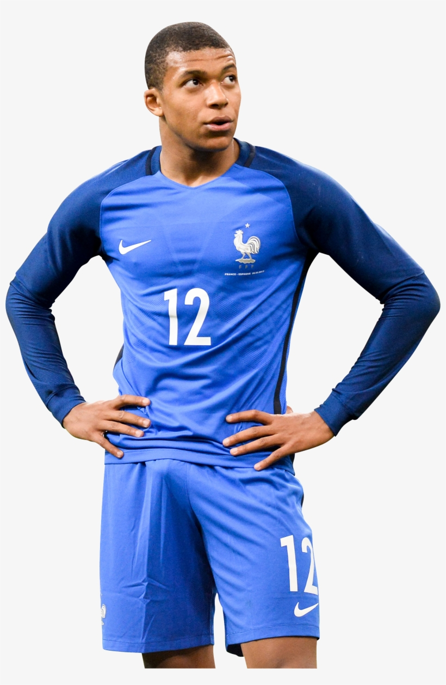
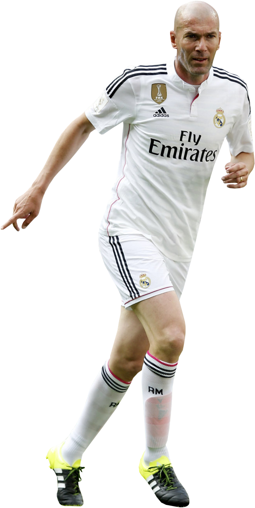
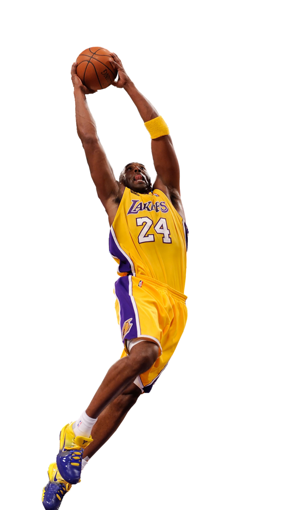
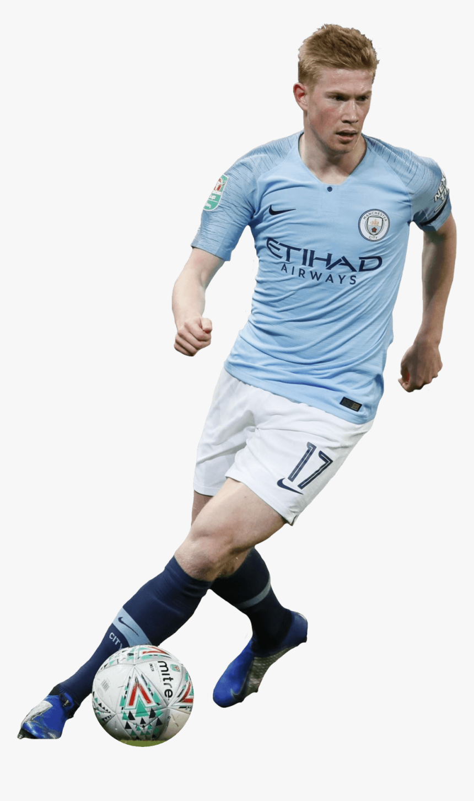

Hello, I'm Robin ğŸ˜
I am 18 years old, I grew up in Cannes and I'm now currently studying at ESSEC Business School in Cergy.
I am font of sports , all sort of games and I love to travel and learn new things.
Discover what is my favorite song⚽ FOOTBALL ⚽
Since I'm young, I love playing and watching football. I played at Fc Mougins for 9 years and my favorite team is Olympique de Marseille. I was very happy when France won the World Cup in 2018 🇫🇷🏆
Since I lived in Cannes , I also like playing beach-soccer ⚽ beach-volley ğŸ and swimming ğŸŠâ€ On the other hand, I like to watch NBA 🀠but it is quite complicated because of the jetlag 🕗 between USA and France.
Here are some of my favorite sportsmen :
- 
- 
-

- 
- 
- 
- 
- 
- 
✈️ 🌍 TRAVEL 🌠✈ï¸
As I am very curious, I love travelling and discovering new places. My first holidays were in Greece 🇬🇷 on the island of Paros, and my last holidays were in Bali, Indonesia 🇮🇩
Here is the list of all the countries I visited :
- 🇺🇸 USA 🇺🇸
- 🇲🇽 Mexico
- 🇧🇪 Belgium 🇧🇪
- 🇨🇠Switzerland 🇨ğŸ‡
- ğŸ‡ğŸ‡· Croatia ğŸ‡ğŸ‡·
- 🇮🇩 Indonesia 🇮🇩
- 🇮🇹 Italy 🇮🇹
- 🇸🇮 Slovenia 🇸🇮
- 🇰🇷 South Korea 🇰🇷
- 🇪🇸 Spain 🇪🇸
🍽️ FOOD 🍽️
Passionated by international gastronomy. I like eating chinese noodles 🲠mexican burritos 🌮 and indonesian rijsttafel. However, the best dishes in the world are my grandmother's 👩â€ğŸ³
Since I'm a student , I often eat pizzas 🕠burgers 🔠and pasta ğŸ .. but when I have time I like cooking better dishes like tuna tartar 😋
👨‍👩‍👧‍👦 FAMILY & FRIENDS 👨‍👩‍👧‍👦
I have one sister whose name is Coralie 🙋†she is 15 years old. She plays volley-ball in Le Cannet ,and studies 📠at Institut Stanislas Cannes.
I love my little cousin William 👦 he is very funny 🊠and a little bit crazy 😈 Even if he is pretty athletic (mountain bike 🚵†climbing🧗†), he loves playing video games ğŸ®
My bestfriend's name is Georgio. He lives in a small town 🡠in Mexico called Chemuyil (near Cancun) 🌴
Finally, I have a cat named Miaou ğŸˆ